CONTENT OUTLINE
- 模拟电路
- 数字电路
〇、目录
模电部分
1、基本元器件介绍
二极管
- 普通二极管
- 稳压二极管
- 整流二极管
- 开关二极管
- 电容
三极管
- 三极管介绍
- 三极管三种工作状态测试
场效应管
- 场效应管介绍
- 场效应管三种工作状态测试
光耦
蜂鸣器
继电器
数码管
瞬态电压抑制器
2、常用的基本电路分析与验证
基本放大电路
- 基本共射级放大电路
- 分压偏置式共射极三极管放大电路
- 反馈
电源电路
- 集成稳压电源电路
- 扩流电路
- 开关电源电路
集成运算放大电路
- 反相比例放大电路
- 同相比例放大电路
- 加法电路
- 减法电路
- 单极性变双极性电路
- 仪表放大器
- 积分微分电路
- 三角波发生电路
- 滤波电路（高通、低通、带通、带阻）
- 采样保持电路
- 信号测试电路
- 电压比较电路
- 文氏桥震荡电路
功率放大器
震荡电路
- 555震荡电路
- 多谐振荡器
- 占空比可调电路
- 单稳态触发器
- 定时1S电路
- 555震荡电路
3、实际电路应用
- 多路稳压电源设计
- 数控恒流电路
- 峰值检测电路
数电部分
4、基本逻辑门电路
- 与门、或门、非门、异或门、与非门、或非门、与或非门
- OC门、OD门、三态门、CMOS传输门
5、组合逻辑门电路测试
2.0**、根据电路分析逻辑功能
2.1**、根据题目要求设计相应功能逻辑电路
2.1.0**、火灾报警系统
2.1.1**、四人表决器
6、编码器与译码器
3.1**、编码器**
3.1.0**、二进制编码器**
3.1.1**、二-十进制编码器**
3.1.2**、优先编码器**
3.1.2.0**、优先编码器测试（74LS148D）**
7、译码器**
4.1.0**、二进制译码器**
4.1.1**、二-八译码器**
4.1.1**、二-十进制译码器**
4.1.2**、数码管显示译码器**
4.1.2.0**、数码管显示译码器测试（CD4511）**
8、触发器**
5.0**、基本RS触发器**
5.0.0**、基本RS触发器测试（CD4044）**
5.1**、时钟控制R-S触发**
5.2**、JK触发器**
5.2.0**、JK触发器测试（74LS112）**
5.3**、T型触发器**
5.3.0**、JK触发器转T型触发器**
5.4**、D型触发器**
5.4.0**、JK触发器转D型触发器**
5.5**、T’触发器**
5.5.0**、D型触发器转T’触发器**
9、计数器**
6.0**、同步计数器和异步计数器的区别**
6.1**、同步二进制计数器测试（74LS161）**
6.2**、十进制计数器（74LS192）**
6.3**、利用74LS192实现100进制计数器**
6.4**、任意进制计数器**
6.4.0**、用74LS160 反馈法构成6进制计数器**
10、数字电路设计**
4.0**、抢答器设计**
4.1**、简易秒表**
4.2**、简易密码锁**
4.3**、简易频率测试仪**
一、基本元器件介绍
1、二极管
定义：二极管就是半导体材料被封装之后，在PN结两端加上两个正负极引线制作而成。
特性：单向导通性【电流只能正极到负极】、伏安特性【电流与电压的关系】
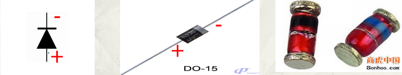
1.1 普通二极管特性测试
Multisim中不认为电源的负极为0电平，故需要负极接地
特性：
- 二极管导通之后，它所分的电压值为
0.7v【工业标准认为】； - 发光二极管导通之后所分的电压为
1~2v，电流值为5~20mA；- 也就是说，发光二极管的发光条件是电流为
5~20mA【超过时可能被烧毁】 - 为使得发光二极管发光，应调整电阻阻值
- 也就是说，发光二极管的发光条件是电流为

当二极管两端电压过小时，它是不导通的；当电压值达到
0.5v之后，开始导通二极管反向不导通，当电压达到 击穿电压 时，二极管导通
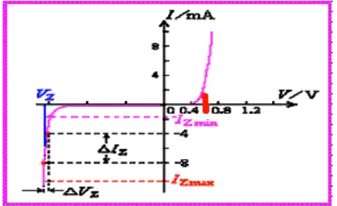
1.2 稳压二极管
能够稳定电压的二极管【如：ZENER-ZPD5.1 | 稳压5.1v】
实行稳压的条件：
- 工作在反向击穿状态【反接】
- 反向电压应大于稳压电压
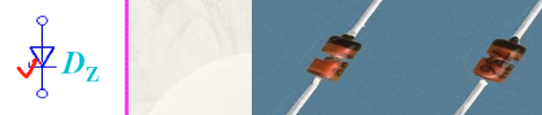
1.2.1 测试
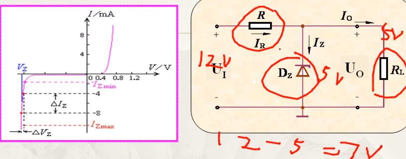
从伏安特性曲线可知，稳压二极管的电流应满足 I
zmin< I < Izmax，且大概为4mA~8mA
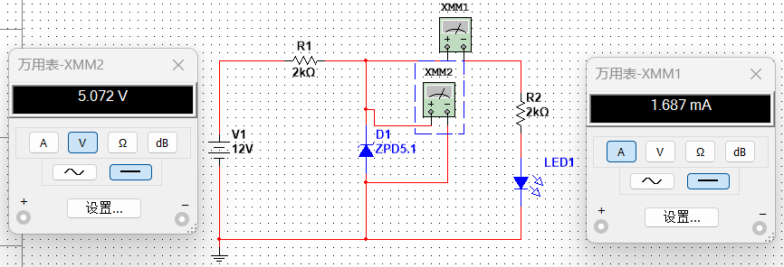
已知发光二极管导通电压为
1.66v，设导通电流为10mA，稳压二极管路端电压为5.1v，可以得到的：R2的阻值应为 R2 = ( UZPD5.1- ULED1) / ILED1= 344Ω为使得稳压二极管正常工作，取稳压二极管电流为
6mA，则流过串联电阻R1的电流为 IR1= ILED1+ IZPD5.1= 16mA，电压值为：总电压 - UZPD5.1=6.9V，得到串联电阻阻值为431.25Ω ≈ 431Ω

总结
- 稳压二极管的使用形式为稳压二极管和电阻进行串联
- 稳压二极管要达到比较好的稳压效果，一定要注意稳压电流的选取
- 在电路应用中一定要注意串联电阻阻值的选择

1.2.2 两种稳压电路

对于第一种电路：
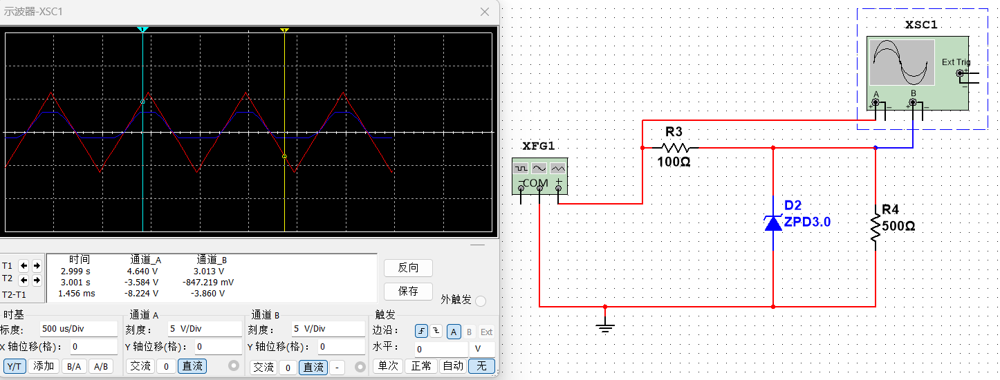
- 当电压小于
3v时，未达到击穿电压，其反接在电路中相当于断开，故示波器输出的是R4上的电压 - 当电压
≥3v时，达到击穿电压，故示波器输出是等于稳压二极管上的电压
对于第二种电路：

- 当电压小于
3V时，未达到击穿电压，其反接在电路中相当于断开，故示波器输出为0； - 当电压
≥3V时，达到击穿电压，稳压二极管分压3V，其余电压负载在R5，示波器输出R5的电压
1.3 整流二极管
用于把交流电变为脉动直流电

1.4 开关二极管
它是电路上为进行【开 | 关】作用而设计的二极管。它由【导通变为截止 | 截止变为导通】所需的时间比一般二极管短
应用：在电路中主要防止反向电流烧坏一些精密器件，起保护作用。
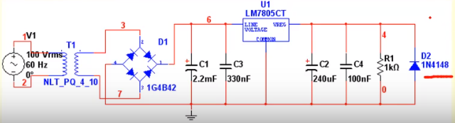
1.5 电容
它有两个电极板，和中间所夹的介质封装而成，具有特定功能的电子器件。
作用：旁路、去耦、滤波、储能
1.5.1 旁路
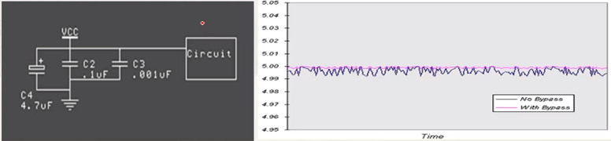
VCC电源可能会因为外界干扰，如变为蓝色信号，这样的信号对于处理器来说可能会导致错误的逻辑输出。若电压本身就是波动的，电容可以储能，当外界信号变化过快时，及时稳定信号
故加入电容：
- 使输入电压均匀化，减小噪声对后级的影响；
- 进行储能，当外界信号变化过快时，及时进行电压的补偿
1.5.2 去耦电容（退耦）

- 去耦电容和旁路电容的作用差不多，都有滤除干扰信号的作用，只是旁路电容针对的是输入信号，而去耦电容针对的是输出信号；
- 去耦电容一般比较大【
10uF或更大】，旁路电容一般根据谐振频率是0.1uF 或 0.01uF
1.5.3 滤波和储能
滤波作用：滤波杂波，大电容【如旁路电容中的4.7uF】滤低频，小电容【0.1uF 或 0.01uF】滤高频
储能作用：收集电荷
应用：如时钟芯片DS1302供电【在芯片和地直接接储能电容，当无VCC时，可供芯片短暂工作】
1.5.4 电容在电路中的连接

常用电容极性判断：
- 铝电容：长脚为正极，短脚为负极，或者电容上标有银色负号的一边为负极
- 瓷片电容和独石电容无极性，但设备生产中有工艺要求
注意：耐压值、防止短接【会爆炸】
1.5.5 电容应用总结
- 电源上的电容作用一般时滤除电源电压的波动；还可提供一定的电压储备，已备后续电路的需要；
- 对于一些强干扰的环境，电容的加入可以减少很多电路控制上不必要的麻烦，在使用电容时，需注意耐压值和反接问题
- 电容使用的取值问题可以参考已有电路，多为工程经验
2、晶体三极管
2.1 三极管介绍
由半导体组成的具有三个电极的晶体管
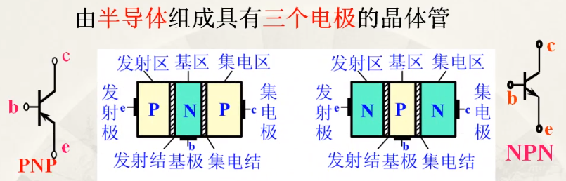
它是一种利用输入电流控制输出电流的电流控制型器件。【使用基极电流控制发射极电流】
三种工作状态：放大状态、饱和状态、截止状态
2.1.1 放大状态
对于NPN型三极管，基极电流
Ib = βIc，其中β为放大量【对于某个特定三极管，β固定】基极信号和集电极信号同时汇集给发射极，
Ie = Ib + Ic
条件：发射结正偏【Ub > Ue】，集电结反偏【Ub < Uc】
2.1.2 截止状态
条件：发射结反偏【Ub < Ue】，或两端电压为0【Ub = Ue】
2.1.3 饱和状态
饱和状态即，基极电流和集电极电流都很大时，发射极电流已经不受基极控制了
条件：发射结正偏【Ub < Ue】，集电结**正偏**【Ub > Uc】
2.2 三极管三种工作状态测试


其中，
XMM1-2-3分别测发射极Ie、基极Ib、集电极Ic的电流，XMM4测基极与发射极之间的电压Ube，XMM5测发射极与集电极之间的电压Uce对于共发射极输入特性曲线，当
Uce = 0V时，即V2电压为0V，当Ube < 0.2V时，基极电流Ib = 0A，三极管处于截止状态【如上图，基极电流极小，Ube ≈ 电源电压】

由共发射极输入特性曲线，当
Ube > 0.7V时，Ib导通【修改V1为1V】
结论一：当基极和发射极完全导通时，所分得的电压值为0.7V【工程规定】
放大状态测试：修改
V2 = 7v此时，万用表参数如下图所示。此时，
Ube = 663mV【发射结正偏】，Uce = 714mV，因为发射极接地，故有Ub < Uc【集电结反偏】。三极管处于放大状态。由图可知，
Ib = 33uA，Ic = 3.143mA，Ie = 3.176mA，可证实Ie = Ib + Ic，且Ib = βIc，β ≈ 95
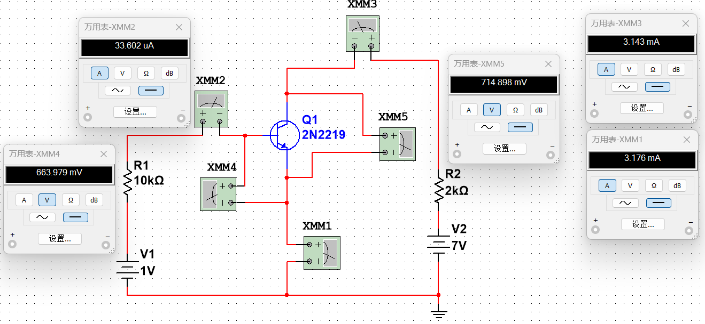
测试Ⅰ：逐渐增大
V2【如8V、9V】，发现集电极电流Ic的增长很小测试Ⅱ：通过减小
R1来增大基极电流Ib，很明显集电极电流Ic的增长很明显
由上述测试和三极管输出特性曲线可得

结论二：当基极电流Ib固定，改变Uce【即改变V2电压】，集电极电流Ic基本保持不变
结论三：当Uce固定【即V2电压固定】，增大基极电流Ib，集电极电流Ic也相应增大。但增大受到一些限制，如Vce【即V2】、R2，这些因素均是会影响集电极电流Ic的因素。在测试中，减小R2阻值，也会释集电极电流Ic增大的潜力。
在饱和区，
基极电流Ib和集电极电流Ic都很大，要求发射结和集电结均正偏改变参数：为增大
基极电流Ib，修改R1=100Ω，V1=1v

此时，发射结和集电结均正偏，此时
集电极电流Ic≠β*基极电流Ib
结论四：饱和区，集电极电流Ic不受基极电流Ib控制且都很大，并且Uce所占电压很小【这种接地法，Ub一直为0.7v】
2.3 小结
2.3.1 截止状态
特点：Ib = 0，Ic = 0， Ie = Ib + Ic = 0
工作状态：集电极和发射极之间相当于开路
2.3.2 放大状态
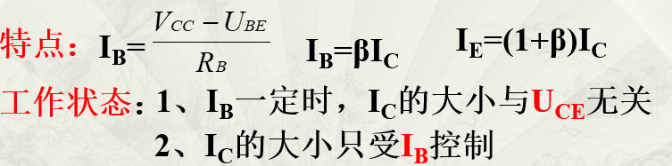
其中，
Ube为0.7V
2.3.3 饱和状态
特点：Ib和Ic 都很大，Ic 不受Ib控制，Uce两端电压很小，相当于导线，工程上认为硅饱和导通的Uce的压降为0.3V，锗管为0.1V。
2.4 三极管主要参数
- 共发射极电流放大系数：三极管的放大系数一般为
10-100倍，应用中一般取30-80为宜 - 集电极最大允许电流
Icm：超过最大允许电流可能会烧毁 - 集电极最大允许耗散功率
Pcm - 集电极-发射极间反向击穿电压
V（BR）CEO：即Uc或Ue大于Ub时，压差不用大于击穿电压

特征频率：只能方法150MHZ以内的信号
3、场效应管
3.1 场效应管介绍
它时一种电压控电流的器件。它有三个电极：栅极G、漏极D、源极S。
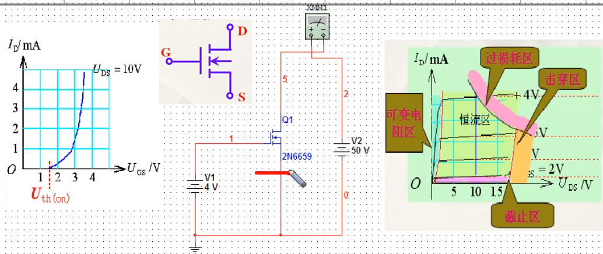
3.2 场效应管三种工作状态测试
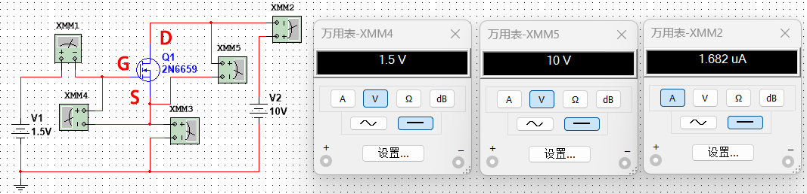
如上图，
X4与X5其实是测试V1与V2的电压，X1、X2、X3分别测试栅极、漏极、源极电流
- 当
Uds = 10V【漏极与源极间的电压，即V2】时，当Ugs < 1.5V【栅极与源极间的电压，即V1】时，漏极电流极小，可视为不导通。【通常将1.5V称为门限点电压，Uth】 - 当
Uds很小且不变，Ugs增加会导致Id【漏极电流】增大 - 当
Ugs不变，Uds增大，漏极电流Id变化很小
3.2.1 截止区
当Ugs电压小于1.5V的开启电压时，mos管不导通。
3.2.2 可变电阻区
当Uds很小且不变，Ugs增加会导致Id【漏极电流】增大
3.2.3 恒流区
当Ugs不变，Uds增大，漏极电流Id变化很小
过损耗区：当电流和电压都很大，但未击穿时，该器件的功率较大，需要添加散热器避免损坏
3.2.4 击穿区
当Uds很大时【大于击穿电压】，场效应管被击穿。这种情况下，如没有限流电阻，管子很容易烧毁
3.3 三极管和场效应管的比较
三极管：电流控制器件【基极电流控制晶体管导电能力】
场效应管：电压控制器件【用电压产生的电场来控制器件导电能力】
| 三极管 | 场效应管 | |
|---|---|---|
| 输入阻抗 | 不高 | 极高 |
| 噪声 | 高 | 小 |
| 反应速度 | 较快【兆赫兹级】 | 慢 |
输入阻抗高时，仅需要极小的中间电流，就可接收前置电路的信号
3.4 结构分类

其中，N沟道
MOS的增强型，相当于NPN型三极管；P沟道MOS的增强型，相当于PNP型三极管耗尽型：当
Ugs = 0V时，但Uds ≠ 0V，也能产生漏极电流增强型：当
Ugs < 1.5V，无论Uds，MOS管不导通
4、光耦
实现一种“电-光-电”的转换。

4.1 光耦测试

光耦器件基极电流为
16-25mA，此处取16mA发光二极管点亮，需要
5-20mA，光耦器件集电极最大电流10mA，此处取6mA
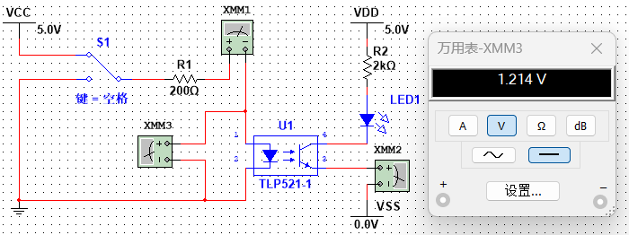
其中，由上图可知，光耦器件的前置电路占电压
1.214V，为使X1测得前置电路电流为16mA，则R1负载电压为U1 = 5V - 1.214V = 3.786V，故R1 = 3.786V / 0.016A = 236.625Ω对于后置电路，一般认为光耦器件处于饱和状态，所分电压一般为
0.3V；发光二极管所分电压为1.66V；电流取6mA。综上可得，R2所分电压为U2 = 5V - 1.66V - 0.3V = 3.04V，R2 = U2 / 0.006A = 506.66Ω修正
R1/R2后
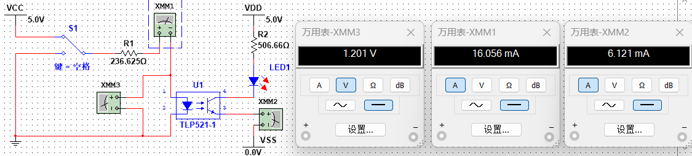
4.2 光耦使用注意事项
光耦电路两侧的供电电源【VCC与VDD】最好不同
若两侧信号相同且具有干扰新信号，光耦电路会失去隔离两侧电路的作用
5、发声器件
作为电子讯响器，运用其发声特性，作为提示或播放功能。
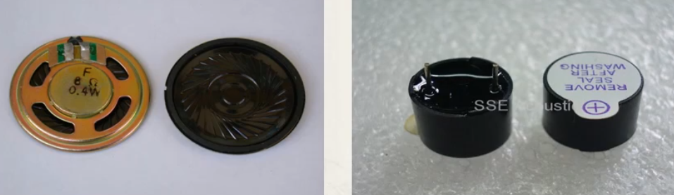
- 左图为喇叭，无极性器件【无正负之分】，无源蜂鸣器【内部没有振荡源，故直流不能驱动，需要
2KHZ-5KHZ的方波才能工作】 - 右图为蜂鸣器，有极性【长脚为正，短脚为负】，有源蜂鸣器【内含振荡源，给予
1.5V-15V的电压后就会工作】
6、继电器
6.1 继电器介绍
它是一种“自动开关”，通过【低电压、小电流】去控制【高电压、大电流】。
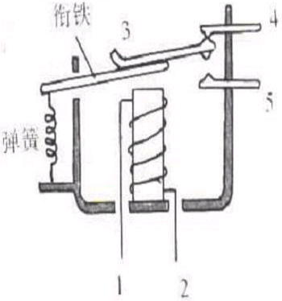
如上图，如果用
3、5脚接入220V电路，接入5V电源，铁芯磁化导致3、5脚接通；若1、2脚无电源，衔铁被弹簧弹起，高电压电路被断开
常用术语
- 常开触点：如
3、5脚 - 常闭触点：如
3、4脚
应用：对开关速度要求不高的场合
6.2 继电器实物分析

- 如上图所示,驱动电压为
5V - 可以承受的控制信号量值：直流
30V-3A、交流220V-3A
使用时，既要达到驱动电压，又要防止器件烧毁
6.3 继电器测试电路
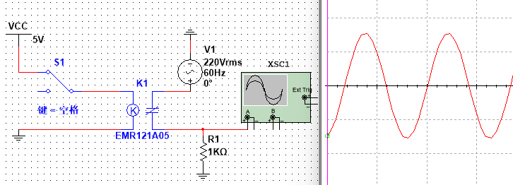
左侧“K”部分表示线圈部分，右侧表示开关部分
EMR121A05继电器，“05”表示驱动电压为5V
7、数码管
通过控制不同的LED点亮来显示所需要的字符。

以上为实物图、示意图、共阴结构图、共阳结构图
7.1 数码管测试电路
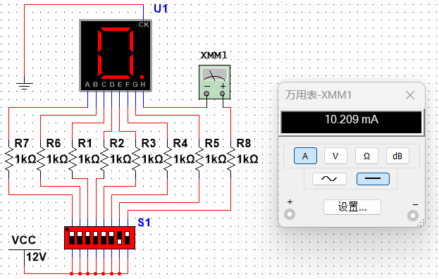
8位组合开关：
DSWPK_8数码管：指示器【
HEX_DISPLAY | SEVEN_SEG_DECIMAL_COM_K】
K：阴极A：阳极COM：自动数码管也属于发光二极管，故导通电压为
1.66V，电流为5-20mA
8、瞬态电压抑制器【TVS】
它是一种二极管形式的高效能的保护器件，防止瞬态高能量冲击，保护精密器件免受各种浪涌脉冲的损坏。
8.1 TVS作用
- 在信号和电源线上，能防止微处理器，人体静电、交流浪涌或噪声，导致处理器的失灵
- 能释放超过10000V，60A以上的脉冲，并能持续10ms，而一般的TTL器件，遇到30ms的10V脉冲时，便会导致损坏，所以利用TVS是既可以防止器件损坏，也可以防止总线之间开关引起的干扰
- 将TVS放置在信号线和地之间，能避免数据及控制总线受到不必要噪声的影响
8.2 TVS典型电路
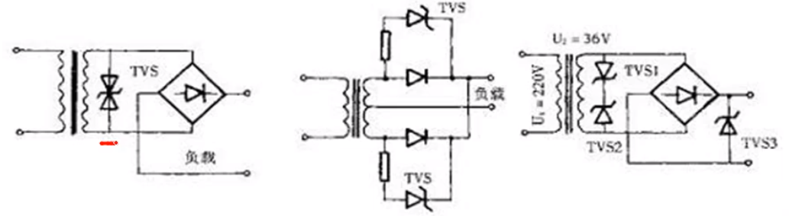
二、基本电路验证与分析
1、基本放大电路
1.1 基本共射级放大电路

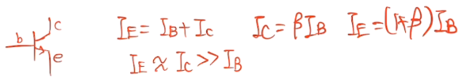
左侧
es信号发生器为输入信号，右侧U0为输出信号C1与C2为隔直通交作用
电容
C1的作用是：防止Ucc对输入信号的影响
Ucc的作用：
- 为电路供能
- 为电路提供合适的静态工作点【当输入信号反向时，
Ube < 0.7V三极管截止，导致输出波形失真】
Rb的作用：为电路提供合适的静态电流Ib
Rc的作用：把放大的电流信号转化为电压信号
各器件的取值范围
- 三极管的放大电路的小信号的放大，常用器件最大通过电路也只有几百毫安，所以输入信号不能太大 ；
- 对于三极管放大电路的设计，基极电阻
Rb一般为几十到几百千欧。集电极电阻Rc一般为几千到几十千欧； C2、C2作为隔直通交的电容，取值一般为几微法到几十微法。
1.2 动静态的分辨
此处的共射极电路分析参考【此处】
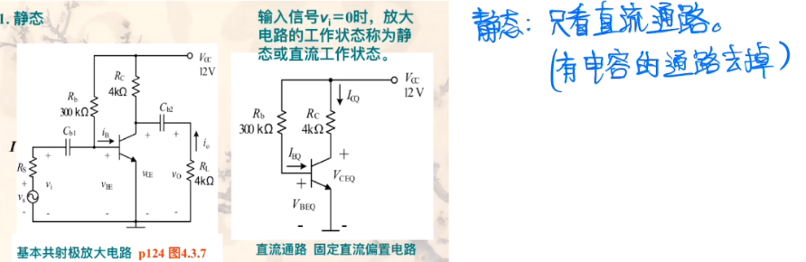

直流通路：去掉电容支路及交流信号源支路
电容对于直流电路来说相当于断开
1.3 小信号模型【交流】

例题：

1.4 电路分析及测试
1.4.1 静态电路分析

1.4.2 动态电路分析
小信号模型为
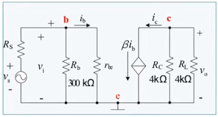
① 电压增益为

源电压增益为

② 输入电阻Ri 为
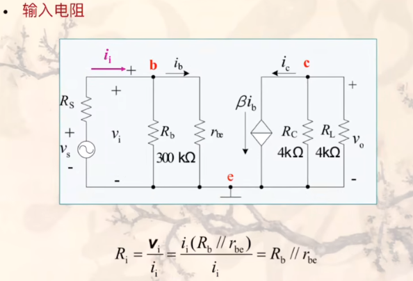
③ 输出电阻R0为
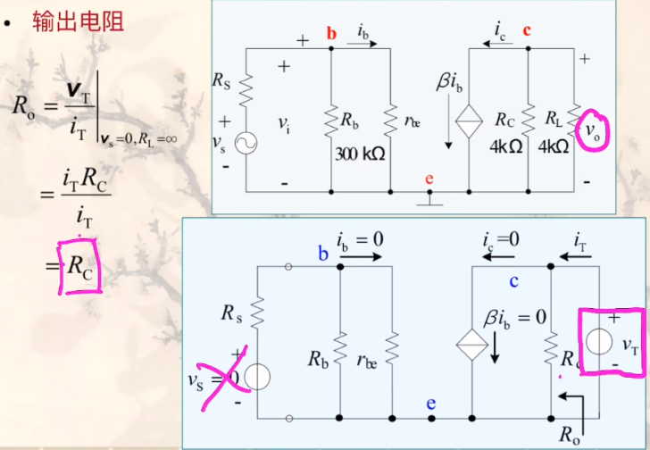
例题
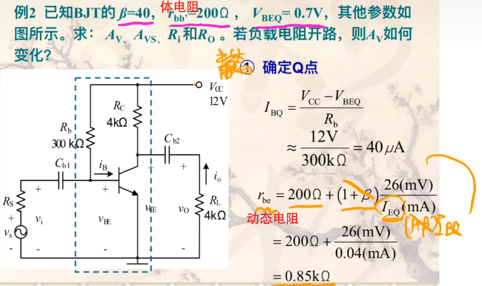
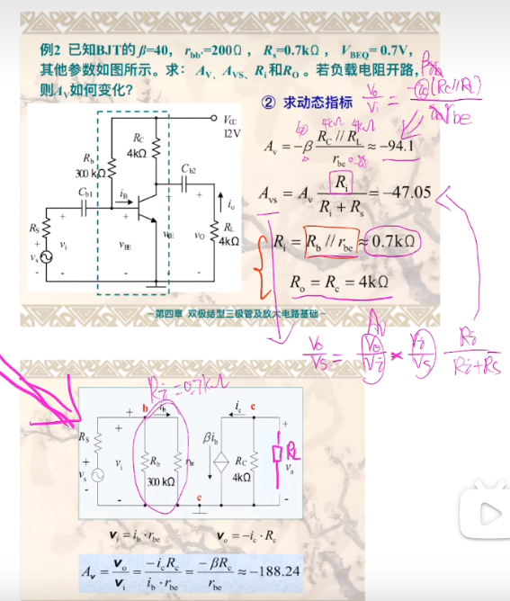
1.4.3 电路测试

由X2、X3可知，三极管发射结正偏，集电结反偏，三极管于放大状态
对于有效电压为
10mV的交流信号，最大电压为10√2mV，约为14.14mV，放大后最大为2.261V，放大倍数为161倍，且输出信号被反向
① Uce为什么会被反相？
Ub【总基极电压】为交流信号与直流信号Uc的叠加值
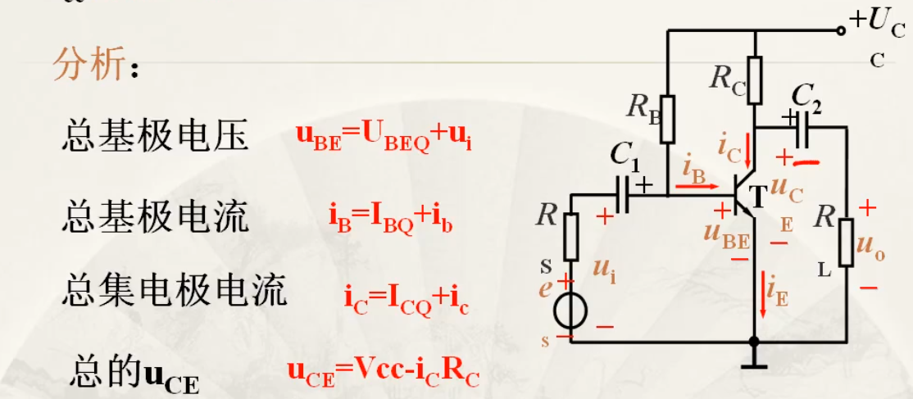

u[BE]表示总基极电压，即B点电压，E表示发射极电压，因发射极接地故数值相等
U[BEQ]表示直流电在B点给定的电压，Q来自于【静态电路 |Quiescent state】
u[i]表示直流电在B点给定的电压——————————————
i[B]表示总基极电流
I[BQ]表示直流电给定的电流
i[b]表示交流电给定的电流——————————————
i[C]表示总集电极电流
I[CQ]表示直流静态电路给定的电流
i[c]表示交流电给定的电流——————————————
u[CE]表示总的集电极与发射极电压差
② 减小Rb的后果【如R1=100kΩ】：输出信号的部分负向信号被削减【饱和失真】

这是因为，R1减小，基极电流
Ib增大，导致集电极的电流Ic也增大又因为输出电压
Uce = -ic*Rc，故输出信号峰值也增大，但反向电压也反向增大至小于0，使三极管饱和失真。
③ 增大Rb的后果【如R1=1MΩ】：输出信号的部分正向信号被削减【截止失真】

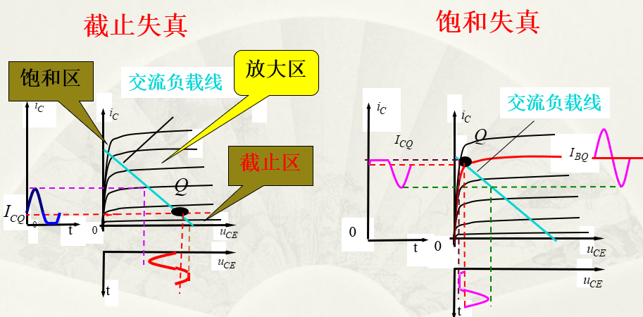
④ 如何确定合适的静态工作点Q：即分析与Rb、VCC、Rc的关系，参考此处

Rb增大，基极电流Ib减小，导致Ic减小，由公式得Uce增大
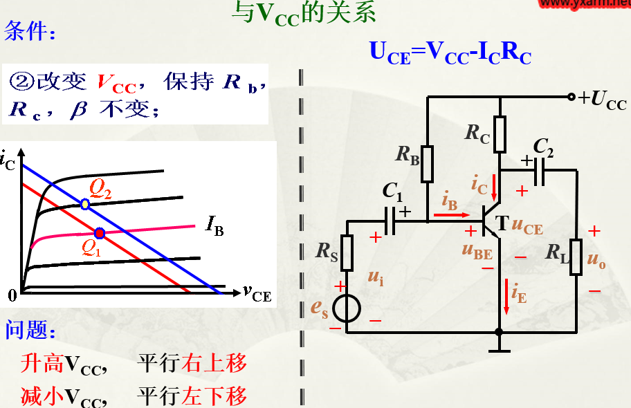
VCC增大，基极电流Ib增大，导致Ic增大

1.5 温度影响
这种电路虽然结构简单，但最大的缺点是静态工作点不稳点。当环境温度变化、电源电压波动、更换三极管时，都会使原来的静态工作点改变，严重时使放大器不能工作。

1.6、分压偏置式共射极三极管放大电路
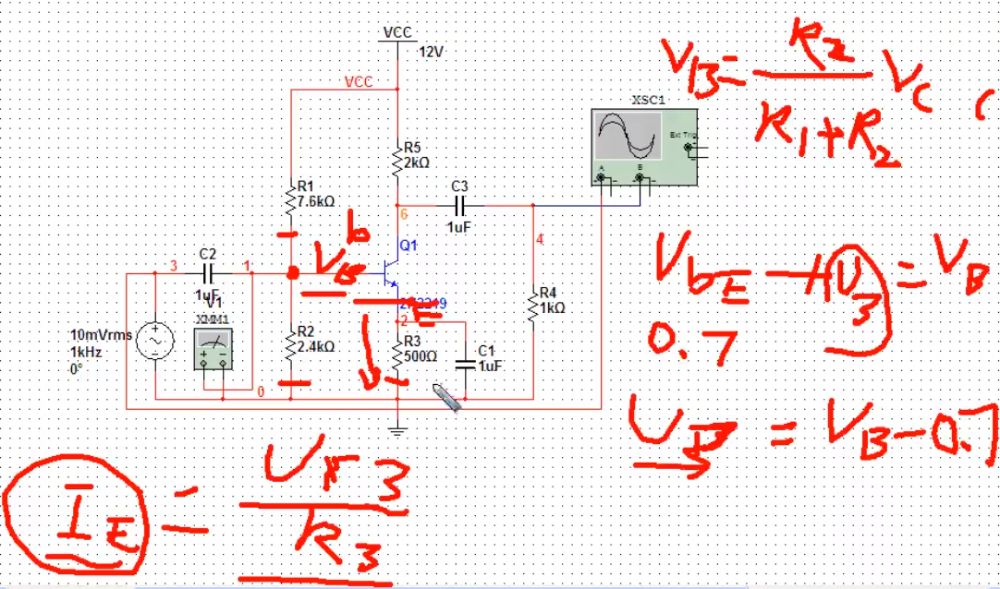
B点处的电压
Vb可由R1和R2分压计算三极管BE段与
R3串联，再与R2并联，故电压相同值为Vb，即Vb = Vbe + U3：而Vbe = 0.7V，故计算出R3的电压U3进而计算出三极管发射极电流
Ie = U3 / R3，可以看到发射极电流与三极管失去的关系，除去了温度对电路的影响。
温度变化分析
温度升高↑，放大系数β增大↑，静态电路的集电极电流Icq增大↑，发射极电流Ieq也增大↑，进而U3也增大↑。同时，B点处的电压Vb不变，U3↑，故三极管基极与发射极间的电压Vbe减小↓，【此处逻辑有问题，之后补充】这样导致Ibq减小↓，Icq减小↓，U3减小↓【R3为电流负反馈】

改变R3电阻值后【R3 = 400Ω↓】，放大倍数减小

断开C1，输出信号电压减小
总结
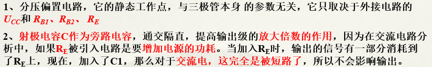
1.7 反馈
凡是将放大电路输出端的信号（电压或电流）的一部分或全部引回到输入端，与输入信号叠加，就称为反馈。
负反馈：引回的信号削弱了输入信号。
正反馈：引回的信号增强了输入信号。
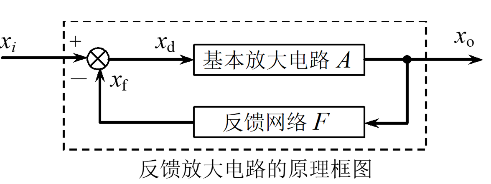
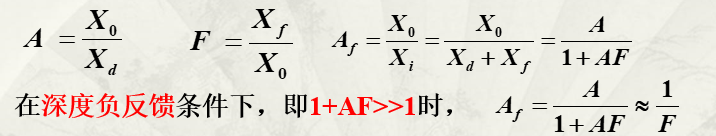
其中，基本放大电路放大倍数
A【A≥1】，反馈网络放大倍数F【0≤F≤1】对于闭环放大倍数
Af，在深度负反馈条件下，即1+AF ⋙ 1，即AF ⋙ 0，故1+AF ≈ AF
此时，闭环放大倍数取决于反馈系数F，而与开环放大倍数A没有关系。通常，反馈网络仅由电阻构成，反馈系数F十分稳定。所以，闭环放大倍数必然相当稳定，诸如温度变化、参数改变、电源电压波动等明显影响开环放大倍数的因素，都不会对闭环放大倍数产生多大影响。
1.7.1 负反馈
负反馈的作用：
- 稳定静态工作点
- 稳点放大倍数
- 改善输入电阻和输出电阻，扩展通频带，改善输出信号波形
负反馈作用举例
例一：
如某放大器的开环放大倍数A=1000，由于外界因素影响，其波动幅值为10%，若反馈系数F为0.009，则闭环放大倍数Af = 1000 / (1 + 1000 * 0.009) = 100。
此时波动10%，变化量仅为1，可见放大倍数的稳定性大大提高
【其实是以降低放大倍数为代价，提高放大倍数的稳点性】
例二：

引入负反馈后，失真了的信号经过反馈网络又送回到输入端，与输入信号反向叠加，得到的净输入信号为正半周小而负半周大。这样正好弥补了放大器的缺陷，使输出信号比较接近正弦波。
1.7.2 正反馈
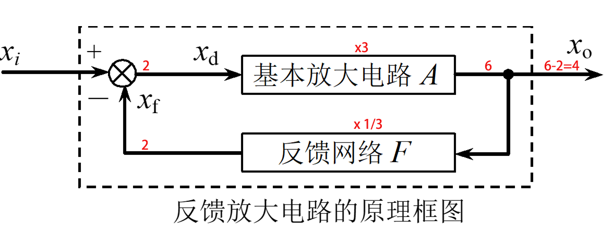
当|AF| = 1时，即放大系数A和反馈系数F呈倒数关系。此时，电路将产生自激，去除信号源也将产生信号的输出

当|AF| ＞ 1时，放大系数A过大，输出信号将不断增加，如果无及时的限制措施，信号将出现严重失真【如上图】
当|AF| ＜ 1时，反馈系数F过大，信号将不断衰减，直到消失
2、电源电路
2.1 集成稳压电源电路
2.1.1 5V稳压电路
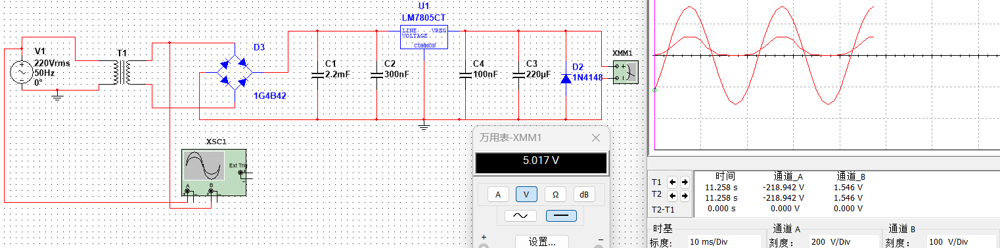
此为5V稳压电路。
其中，
1G4B42为整流桥【将交流变为脉动直流】C1电容将脉动直流基本转为直流，C2电容滤除高频信号，C2、C3为去耦电路，小电容滤除高频干扰，大电容滤除低频干扰，且电容可储能，当外界电压不稳定时对
LM7805进行供电
1N4148是当右侧有反向电流时，二极管立即被导通并将负电压导入到地，起到防止7805稳压器被反向烧坏的作用。
LM7805为5V稳压芯片，输入电压在7-35V之间变压器
TS_MISC_25_TO_1为25：1的电压器
小结：
- 整流二极管的选择：
Uzmax = √2Uo【Uo为变压器副线圈输出的有效值】，即应选择反向电压大于Uzmax的整流管。 - 电容C1的选择【经过电容输出的电压为
1.2Uo】，即耐压值大于1.1√2Uo，大约为1.55Uo - 变压器的选择：应选变压电压大于稳压块电压，电流大于需要输出电流的变压器
- C2作为旁路电容，滤除输入线上窜入的干扰信号，防止自激，选择电容一般为0.3uF。
- C3、C4作为耦合电容，滤除输出线上的干扰和自激，以及对输出线上电压的突变，提供储能的作用
LM7805的引脚及功能- Input：电压输入端，其输瑞入电压范围为
7~35V - Ground：电源地端
- Output：电压输出端，典型值为
5V - 最大电流：
1.5A
- Input：电压输入端，其输瑞入电压范围为
LM7912的引脚及功能- Input：电压输入端，其输瑞入电压范围为
14.5~35V - Ground：电源地端
- Output：电压输出端，典型值为
-12V - 最大电流：
1.5A
- Input：电压输入端，其输瑞入电压范围为
LM317的引脚及功能- Input：电压输入端，其输瑞入最大电压为
40V - Output：电压输出端，可输出
1.25~37V可调的电压 - Adjust：调节端
- 最大电流：
1.5A
- Input：电压输入端，其输瑞入最大电压为
2.1.2 设计一个输出±3~ ±12正负可调电源
略，过于复杂，如需要深究，需要着重研究
小结：
- 在电路应用中要注意器件的选择问题
- 电路中的地，不是0V，是公共端，电压的输出的压差决定的，所以要注意共地问题。
2.2 扩流电路
稳压电路一般电压固定，如需要提高输出电压，则需要扩压电路
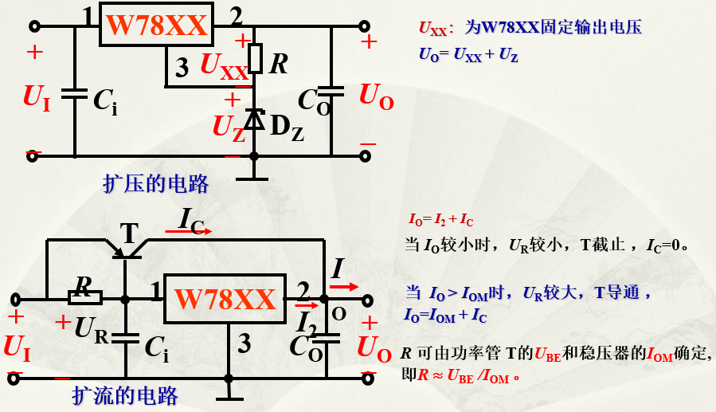
测试略，参考
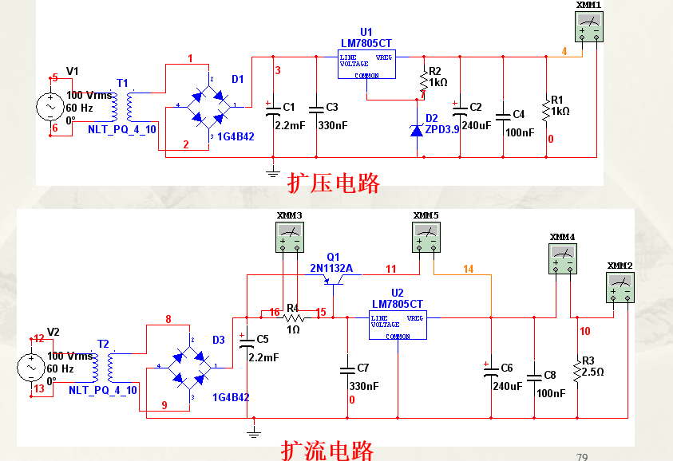
2.3 开关电源电路
由于稳压调整管工作在线性区，因此管耗很大，电源效率为原来的（40％~60％）。而开关管让稳压调整管工作在开关状态，所以电源效率高（ 80％~90％），稳压宽，滤波效果好，在电子设备产品中被广泛应用。
原理分析略
3、集成运算放大电路
集成运算放大器是一种具有很高放大倍数的多级直接耦合放大电路，是发展最早、应用最广泛的一种模拟集成电路。
特点：高增益、高可靠性、低成本、小尺寸
表现： 【放大倍数A、输入阻抗高r(对前级电路影响小)、输出电阻小(对后级电路影响小)、共模抑制比（抗干扰能力）】

运算放大器特点：
★ 工作在线性区
- 理想运放两输入端点位相等【虚短】【
Uo = Aud * Ui,Ui = Up - Un，故Ui = Uo / Aud，因为Aud很大，故Ui ≈ 0，即Up = Un】【Up为正极电压】 - 理想运放输入电流等于0【虚断】【理想的输入阻抗高，故正向端与反向端电流为0】
★ 工作在非线性区【依然虚断】

3.1 反相比例运算放大电路
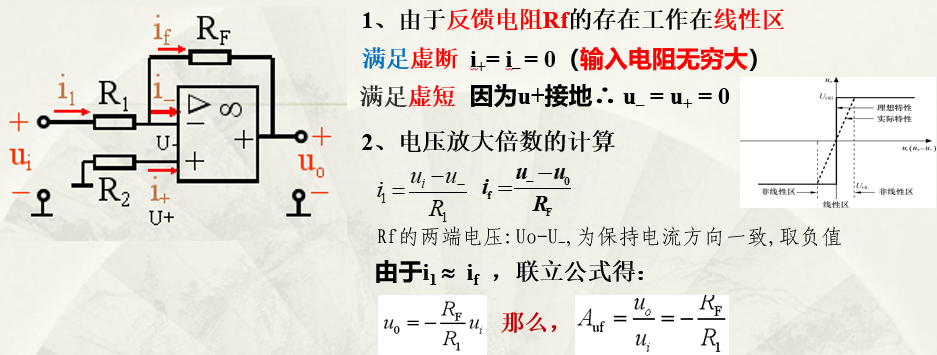
电路测试
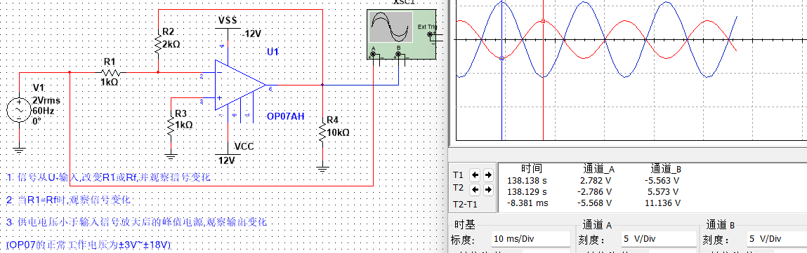
此时，
Auf = -Rf / R1 = -2，R3一般取值≈ R1∥R2，可提高电路抗干扰能力
VCC为正电压，VSS为公共节点端，即负电压

结论
- 反向比例运算放大器的电压输出与原方向相反【输出为正时，输出为负】
- 当
R1 = Rf时，电压放大倍数为-1，如果电路要检测负压，可以通过此电路完成 - 当放大倍数过大，超过供电电压时，会造成失真
3.2 同相比例运算放大电路
与反相比例运算放大电路的区别：同向电路的输出信号是从
U+端输入的
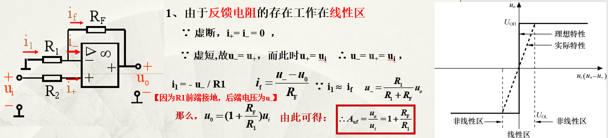
R3一般取值≈ R1∥R2，可提高电路抗干扰能力
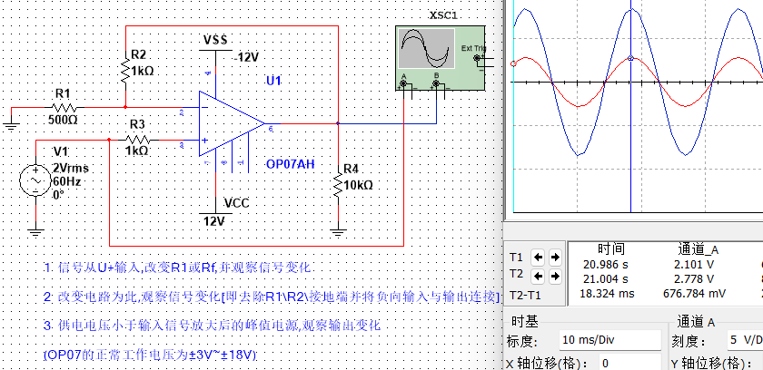
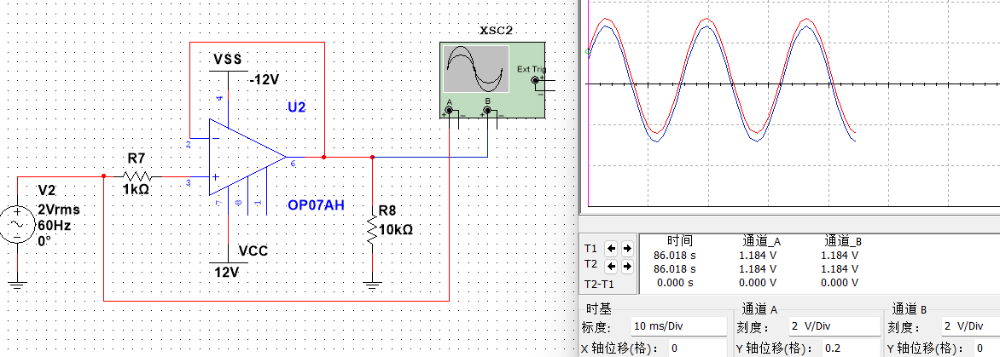
此电路称为跟随器，输入与输出一致
另外，当放大倍数过大，超过供电电压时，会造成失真【同反向比例运算放大电路】
3.3 反相加法运算电路

电路测试：
V1、V2、V3输出的放大倍数均为两倍，即三者均为并联，最后叠加后为三者放大后之和的反向

3.4 同相减法运算电路
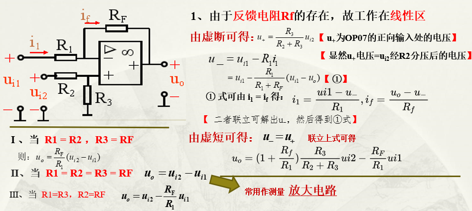

此时，输入第Ⅰ种情况，
Uo = 3（u+ - u-）
3.5 单双极变换电路
5V~-5V的对称信号，称为双极性信号；反之，如0V~5V的不对称信号称为单极性信号
3.5.1 双极性电压变单极性电路

- 该电路左侧为一个运算放大器的电压跟随器电路【运算放大器输入电阻很大，故其对前一级和后一级电路的影响会很小】
- 右侧电路为一个同相比例运算放大电路
对于右侧的运算放大器，正极输入电压
u+由两部分构成：前级信号输入ui、VDD当只考虑
ui时，R1与R3相当于串联分压，可计算出u+部分当只考虑
VDD时，R1与R3也相当于串联分压，可计算出u+部分
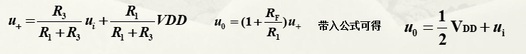
注意：上图公式中同级比例放大的公式中的
R1，实际为R5此时，
VDD = 10V，Ui = -5V~5V，故Uo = 0~10V

电路测试
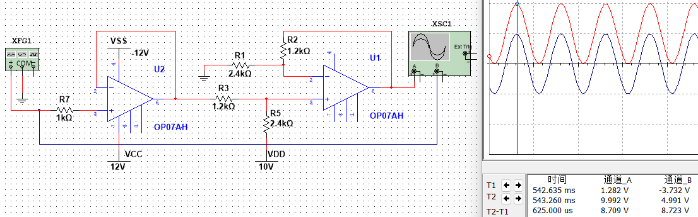
3.5.2 单极性电压变双极性电路

- 左侧电路为一个反向比例放大器
- 右侧电路为一个反相比例加法电路
左侧的放大器：
放大倍数 = -R2 / R1 = -1，对于0~5V的信号输入，输出为-5V~0V当左侧电路输出
0V信号，另一个5V输入的放大倍数为-1，加法电路输出为0V + (-5V) = -5V当左侧电路输出
-5V时，该输入端放大倍数为-R5 / R3 = -2 倍，加法电路输出为(-5V)*(-2) + (-5V) = 5V
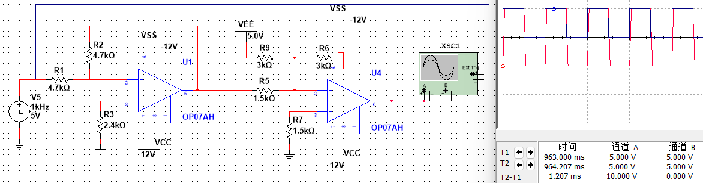
3.6 仪表放大器

该电路为上下对称，第一个为跟随器，第二个为同相比例放大电路，最后为同相减法器
对于同相减法器，由于R4=R7且R5=R6，则有
由虚短虚短可得uo1和uo2，故有Uo = -(R5/R4)*(1+2R3/R2)*(U1-U2)，且仅有U1、U2、R2为变量，可通过调节R2，改变放大倍数
对于该电路的对称性，可使得电路的抗干扰能力增强【如
U1-U2的值不变，输出就不变】
该电路的测试有些小问题，待补充
积分微分电路
- 三角波发生电路
滤波电路（高通、低通、带通、带阻）
采样保持电路
- 信号测试电路
电压比较电路
文氏桥震荡电路
功率放大器
震荡电路
- 555震荡电路
- 多谐振荡器
- 占空比可调电路
- 单稳态触发器
- 定时1S电路
- 555震荡电路
3、实际电路应用
- 多路稳压电源设计
- 数控恒流电路
- 峰值检测电路
四、基本逻辑门电路
1、逻辑门电路
1.1 分类
- 按逻辑功能分类：与门、或门、非门、异或门、与非门、或非门、与或非门
- 按电路结构分类
- TTL集成门电路：输入端和输出端都用三极管的逻辑门电路
- CMOS集成门电路：用互补对称的MOS管构成的逻辑门电路
- 按功能分类
- 普通门（推拉式输出）
- 输出开路门
- 三态门
- CMOS传输门
1.2 高低电平
高低电平为某规定范围的电位值，非固定值

对普通单片机，引脚可检测到
3.5~5V的高电平但对于
ARM芯片，其供电为3.3V，对它来说3~3.3V的视为高电平
1.3 测试
与门电路【74LS08】
指示器【PROBE-2.5】：当输出达到2.5V时，指示灯亮

或门电路【74LS32】
非门电路【74HC04】

异或门电路【74LS86】
同或门电路【74LS266】
与非门电路【74LS12D】
或非门电路【74LS27N】
1.4 OC门
OC门【Open collector gate】，集电极开路的门电路
作用：
- 自己加上拉电阻和电源，可增加驱动能力【但注意灌电流，即流入芯片所能承受的最大电流】
- 实现线与逻辑